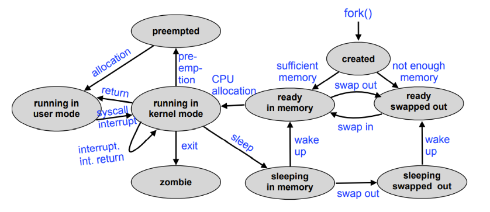

↩️ tdt4186
TDT4186 Kompendium
Notes
Operating systems know the hardware in detail and provides suitable abstractions, to serve the users and their application programs.
OS Development
The first system softwares were reusable probram libraries: linkers, loaders, debuggers and device drivers. The first operating systems were "resident monitors"; they handled interpretation of job control commands, loading and execution of programs and device control.
With multiprogramming, the CPU works on multiple jobs at the same time. In consequence, the OS must handle concurrent I/O activites, main memory for multiple programs, programs in execution (processes), processor scheduling and multi user operation (security and accounting).
Memory management
Access to I/O devices is often slow ("memory gap", "I/O bottleneck"). Polling sends a command and then waits until the device returns data. With interrupts, the device notifies the program when data is ready.
Caches work efficiently due to two locality principles:
- Temporal locality: a program accessing some part of memory is likely to access the same memory soon thereafter
- Spatial locality: a program accessing some part of memory is likely to access nearby memory next
The MMU translates allowed ("virtual", "logical") addresses to "physical" addresses in main memory using a translation table. Enables security by separating process address spaces. The MMU uses a special cache on the CPU - the translation lookaside buffer (TLB).
Memory management involves address mapping (logical to physical) and placement/replacement strategies.
An access matrix consists of Subjects (persons/users, processes, Objects (data, devices, processes, memory) and Operations (read, write, delete, execute). It is used to determine if operation(subject, object) is permitted.
Shells and pipes
Unix shells (a "shell" around the operating system "core") are text based user interface to start commands (Unix programs). Every executed command is a separate child process.
Standard I/O channels (stdin, stdout, stderr) are usually connected to the terminal in which the shell runs that started the process. The numerical file descriptors assigned to these channels are 0 to stdin, 1 to stdout and 2 to stderr. redirects standard output, < redirects standard input and | (pipe) symbol tells the shell to connect the standard output of the left process to the standard input of the right process.
Doug Mcllroy, the inventor of Unix pipes, described the Unix philosophy. It can be summarized as "Do one thing, do it well."
Processes
A process is a program in execution. They often consist of alternating sequences of "CPU bursts" and "I/O bursts". The process context consists of
- Memory: code, data, and stack segment (text, data, bss, stack, heap)
- Contents on processor registers (Instruction pointer, Stack pointer, General purpose registers)
- Process state (RUNNING, READY, BLOCKED, etc.)
- User ID (and group ID)
- Access permissions
- Currently used resources (Files, I/O devices, etc.)
Scheduling enables the coordination of concurrent processes. Scheduling algorithms can be user oriented (short reaction times)or system oriented (optimal CPU utilization).
Inter-process communication (IPC) enables the collaboration of multiple processes. Examples are shared memory and message passing.
From the point of view of the application, calling an operating system service looks like a regular function call, e.g.: pid = fork(); (the C library (libc) provides stubs (adapter functions) that call the actual syscall). However, arbitrarily calling code inside the OS kernel is dangerous. Many CPUs provide several execution modes: "user mode": only restricted functionality is allowed, and "kernel" or "supervisor mode": full access to all hardware resources.
| Syscall | Description | Manual section |
|---|---|---|
| getpid | returns PID of the calling process | (2) |
| getppid | returns PID of the parent process | (2) |
| getuid | return the UID of the calling process | (2) |
| fork | creates a new child process | (2) |
| exit | terminates the calling process | (3) |
| _exit | terminates the calling process | (2) |
| wait | waits for the termination of a child process | (2) |
| execve | loads and starts a program in the context of the calling process | (2) |
Read Unix manual pages with man <num> <command>
With pid_t fork(void), the child's PID is returned to the parent process, and 0 is returned to the child process. The child process continues the program from the current line and inherits most parent process attributes (copy on write), but not the Process ID (PID), and parent process ID (PPID). Copy on write is a an optimization which only really copies the memory if it is updated (written to).
void _exit(int) terminates the calling process and passes an integer argument as "exit status" to the parent process. It also releases the resources allocated by the process. In C, the library function exit() should be used, shich additionally releases resources used by the C library.
pid_t wait(int *) blocks the calling process until one of its child processes terminates, or returns immediately if all child processes are already terminated. The return value is the terminated child's PID. Using the int * parameter, the caller is passed the child's "exit status".
A terminated process is called a "zombie" until its exit status is requested using wait. The resources allocated to such processes can be released, but the OS project management still needs to know about them (i.e. exit status has to be saved).
If a parent process terminates before a child, the child process is orphaned. The init process (PID 1) adopts all orphaned processes.
int execve(const char *command, const char *args[], const char *encp[]) loads and starts the command passed in, remaining in the same process. Alternatives: execl, execv, execlp, execvp.
A more complete unix process state diagram: 
Traditional Unix process creation using fork is too heavyweight for some applications.
Threads and Fibers
Threads are lightweight (usually kernel-level) processes and can share address space (code + data + bss + heap). Advantages: Faster context switching, complex operations can run in parallel of user I/O. Disadvantages: error-prone, shared access requires coordination, scheduling overhead.
Fibers are also called user-level threads (or green threads, or featherweight processes). Implemented on application layer, unknown to the OS. Advantages: 1) Extremely fast context switch: only exchange processor registers. 2) No switch to kernel mode required to switch to different fiber 3) Every application can choose the fiber library best suited for it Disadvantages: 1) Blocking a single fiber leads to blocking the whole process (since the OS doesn't know about fibers). 2) No speed advantage from multiprocessor systems.
| Processes | Threads | Fibers | |
|---|---|---|---|
| Address space | separate | common | common |
| Kernel visibility | yes | yes | no |
| Scheduling | kernel level | kernel level | user space |
| Stack | separate per process | separate per thread | can be common |
| Switching overhead | very high | high | low |
Windows processes provide environment and address space for threads. Every thread has its own stack and CPU register set. User level threads (fibers) are possible, but unusual. Strategy: keep the number of threads low; Use overlapping (asynchronous) I/O.
Linux implements POSIX threads using the pthreads library. All threads and processes are internally managed as tasks, which the scheduler does not differentiate between.
Synchronization
A race condition is a situation in which multiple processes access shared data concurrently and at least one of the processes manipulates the data. To avoid race conditions, concurrent processes need to be synchronized (coordinated).
Only a single process can be in a critical section at the same time. Solved by mutual exclusion, using the mutex (lock) abstraction. However, deadlocks must be considered.
The bakery algorithm is a working solution for the problem of critical sections.
Another idea to ensure that a process stays in the critical section is to suppress interrupts (because they cause context switches).
Many CPUs support indivisible (atomic) read/modify/write cycles that can be used to implement lock algorithms.
Semaphores are an operating system abstraction to exchange synchronization signals between concurrent processes. A semaphore is defined as a non-negative integer with two atomic operations: wait (decrement) and signal (increment).
A monitor is an abstract data type with implicit synchronization properties. They are for example implemented in Java.
An actively waiting process 1) is unable to change the condition it is waiting for on its own 2) unnecessarily impedes other processes which would be able to use the CPU for "useful" work. 3) harms itself: the longer a process holds the processor, the longer it has to wait for other processes to fulfill the condition it is waiting for.
In the case of passive waiting, the process is entered into a waiting queue and is not unblocked until the event occurs.
Deadlocks
A deadlock is a situation in which two or more processes are unable to process because each is waiting for one of the others to do something. A deadlock involves passive waiting, with a BLOCKED process state. The livelock alternative involves active waiting and an arbitrary process state. Deadlocks are the "lesser evil".
Necessary conditions for a deadlock:
- Exclusive allocation of resources ("mutual exclusion")
- Allocation of additional resources ("hold and wait")
- No removing of resources ("no preemption")
- A closed chain of processes exists, such that each process holds at least one resource needed by the next process in the chain ("circular wait")
Resources are administered by the operating system and provided to the processes. Resource allocation graphs are used to visualize and also automatically detect deadlock situations. They describe the current system state; The nodes are processes and resources, the edges show an allocation or a request.
Reusable resources are allocated by processes for a certain time and released again afterwards (CPU, main and mass storage, I/O devices, system data structures such as files, process table entries, etc.). A deadlock occurs if two processes each have allocated a reusable resource which is afterwards additionally requested by the respective other process. Access is typically synchronized with mutual exclusion.
Consumable resources are generated (produced) and destroyed (consumed) while the system is running (Interrupt requests, signals, messages, data from input devices, etc.). A deadlock occurs if two processes each wait for a consumable resource which is produced by the respective other process. Access is typically synchronized with one-sided synchronization.
Indirect methods for preventing deadlocks are 1) use non blocking approaches 2) only allow atomic resource allocations 3) enable the preemption of resources using virtualization. Direct methods prevent circular waiting with continuous requirements analysis and avoidance of "unsafe states".
Banker's algorithm is a deadlock avoidance algorithm which finds a process sequence that guarantees that the system does not run out of resources even when all processes completely use their "credit limit".
Deadlocks can be accepted ("ostrich algorithm") or detected by creating a waiting graph and search for cycles (O(n)). In the recovery phase, deadlocked processes are terminated and resources are preempted. Methods to avoid/detect deadlocks are very difficult to implement, require too much overhead and are thus not useable. Prevention methods more commonly used and relevant in practice. The risk of deadlock can also be solved by virtualizing resources.
Questions
An Introduction to Operating Systems
- Why were operating systems developed initially?
- How did the features of operating systems evolve along with the development of the available hardware?
- How do we define the term "operating system" today?
- What are the building blocks of a computer system?
- CPU, RAM, character and block I/O device, bus
- Which resources are represented by these building blocks?
- Disk is a block device
- Terminal and printer are character devices
- How does code (in the OS) interact with hardware resources?
- Device handling, device drivers
- Port and memory mapped I/O
- Interrupts (async notification)
- DMA
- What are the most relevant developments in computer architecture of the last decades and which problems/benefits are related to these developments?
Challenges and Tasks of Operating Systems
- Which abstractions does a modern OS provide?
- CPUs, processes, memory, file systems, security, ...
- What is a process?
- How do processes interact with each other and the OS?
- System calls
- Synchronization and deadlock fundamentals
- What different view of processes exists and why?
- Which states can a process have and what characterizes the different states?
- What transitions between states are legal?
- How do processes interact with each other and the OS?
Processes and Threads
- What is the definition of a process and what is the difference to a program?
- What is a process hierarchy and why does it exist?
- Parent/child processes, orphans, zombies and PID 1 (init)
- How can processes perform I/O, how can it be (re)configured?
- Relation of the I/O concept to the Unix philosophy?
- Do one thing, and do it well
- Everything is a file
- Relation of the I/O concept to the Unix philosophy?
- How do processes interact with the OS: system calls
- "Gate to the kernel"
- How can processes be created/controlled/terminated?
- Which Unix syscalls are used for process management?
- Fork, exec, kill etc.
- Pros and cons of the Unix fork/exec model
- Which Unix syscalls are used for process management?
- Optimizations for process creation in Unix: copy-on-write
- What are details of the extended process state model?
- What is the overhead of Unix processes and their creation?
- What are the differences between address spaces for processes and threads?
- What are the thread models in Unix and Windows?
- What are fibers (user-level threads)?
- Can you discuss pros and cons of threads vs. fibers?
- Cooperative multithreading
- Can you describe the ideas behind Duff’s device and protothreads? (you don’t have to know the details of their implementations)
- Difference between the cooperative and preemptive ways
Concurrency: Mutual exclusion, Synchronisation, Deadlocks
- What is shared data/memory communication, why is it problematic?
- Can you give an example of a problematic situation?
- i.e. a race condition
- Can you understand multithreaded code using shared data?
- Can you give an example of a problematic situation?
- What is a race condition (can you give examples)?
- Why are race conditions hard to detect and debug?
- What is synchronization used for, which options for synchronization exist?
- Can you define the term "critical section"?
- What are locks and how are they used?
- Can you give details on lock implementations (atomic operations, suppressing interrupts, semaphores)?
- What is a semaphore, which operations exists on semaphores?
- Can you define the use and implementation of semaphores?
- Can you describe problems (e.g. reader/writer) solved using semaphores?
- What are monitors and how to they differ from semaphore solutions?
- Can you define the terms "deadlock" and "livelock"?
- Explain situations leading to both problems
- What are the necessary conditions for deadlocks to occur?
- What is the additional condition that is required for a deadlock to occur?
- Which types of resources exists related to synchronization?
- What are the components of a resource allocation graph, how do you construct it?
- How can you detect a deadlock in this graph?
- Why is this not effective in practise?
- How can you detect a deadlock in this graph?
- What is the dining philosophers problem?
- Why do deadlocks occur here?
- Can you describe a solution to solve the problem?
- Can you discuss the efficiency of different solutions?
- How can deadlocks be prevented and what are safe/unsafe states?
- Which methods exist to resolve a deadlock and what are their pros/cons?
Memory management and Virtual Memory
- Requirements for memory management for multiprogramming systems?
- Which policies and strategies are relevant for memory management?
- Can you describe the basic problem of memory allocation?
- How does dynamic memory allocation work?
- Can you describe different approaches, describe pros/cons?
- Can you name and describe different placement strategies?
- What is memory fragmentation?
- Which kinds of fragmentation exist, what are their properties?
- Internal and external fragmentation
- Where are different allocation methods typically used?
- Which kinds of fragmentation exist, what are their properties?
- Can you describe differences between swapping, segmentation, paging?
- How does paging as an OS concept interact with the MMU (and TLB, and page tables)?
- How can paging be optimized using hardware or software approaches (like TLB)?
- What is the locality principle in computers?
- Which kinds of locality exist, can you describe their properties?
- How can locality be used to optimize performance?
- What is the idea behind virtual memory, which abstraction/illusion is created by virtual memory?
- How does demand paging work?
- What is a page fault and how is it handled?
- What are tasks of the OS and hardware when handling page faults?
- Can you name different page replacement strategies and discuss their pros/cons? (FIFO, optimal, LRU, second chance)
- Can you simulate different strategies given an access sequence?
- Can you define thrashing and name causes and possible solutions?
- What is the working set of a process and how can you determine it?
Scheduling: Uni- and Multiprocessor
- Which approaches to inter-process communication (IPC) exist?
- Can you give their pros/cons?
- What are the primitives for message-based communication?
- Which synchronization methods exist here?
- How can processes be addressed?
- Which message formats exist?
- Which IPC methods exist in Unix?
- Can you describe the concepts and use (programming) of…
- Signals, unnamed pipes, named pipes, Unix message queues, sockets
- What is RPC and what is the fundamental difference to IPC?
- Can you define the terms "dispatching" and "scheduling"?
- Which dispatch states exist, which level of scheduling are they related to?
- Can you describe details of short/medium/long term scheduling?
- Which process state transitions are related to which scheduling level?
- Can you explain preemptive scheduling and its advantages?
- Can you give examples for scheduling strategies, explain how they work?
- Can you determine scheduling orders for a given strategy?
- Can you discuss pros/cons of the different scheduling strategies?
- What is multi-level scheduling and how is this related to priorities?
- Can you give details of scheduling strategies in Unix and Windows?
I/O Management and Disk Scheduling
- How do devices and the OS interact? Can you name different methods?
- Which classes of devices exist and what are their properties?
- Character devices, block devices etc.
- How do interrupts and DMA work and what are their pros/cons?
- How can I/O devices be addressed by the OS?
- What is a device driver, in which ways can it interact with the hardware?
- What are the various tasks of the OS related to devices?
- How are devices represented and abstracted in Unix?
- Name properties of/differences between character/block/other devices
- How does the OS implement the relation device special file <=> device driver?
- How can devices be used in user processes, what are related syscalls/libc functions?
- Why is buffering important, can you discuss the pros/cons?
- How does a ring buffer work, where is it typically used?
- How does I/O scheduling for disk drives work
- What are the pros/cons of the different scheduling approaches?
File Management
- What is the file abstraction and why is it useful?
- What are the syscalls/libc functions in Unix to handle files?
- What is a virtual file system and how does this work?
- What is mounting/unmounting, what is their effect on the directory tree of a Unix system?
- Which methods exist to map a file to disk blocks?
- Describe problems of the approaches/pros/cons
- Which methods exist to manage free space?
- What are the directory and inode structures for typical file systems?
- Unix System V, BSD FFS, Linux ext2/3/4
- What are the challenges for file systems today?
- How can the reliability of disk storage be improved?
- How can the performance of disk storage be improved?
- What is the Unix block buffer cache and how does it work?
- What is logical volume management and why is it useful?
- What is RAID?
- Which different RAID levels exist and how do they work?
- Can you discuss the pros/cons of the different levels?
- What is a journaling/log structured file system?
- How do they work, what are differences to traditional FS?
Virtual Machines and Microkernels
- Can you define monolithic kernels, microkernels, hypervisors?
- Differences between these, pros/cons?
- What problem did first-generation microkernels have?
- How was this solved in second-generation microkernels?
- What is an exokernel?
- What is virtualization, can you define its functionality?
- What is a virtual machine monitor or hypervisor?
- What are the differences between type 1 and 2 hypervisors?
- Which hardware support was introduced to support virtualization?
- What is paravirtualization and what are its pros/cons?
- What is a hypercall?
The Cloud, Unikernels and Single-Address Space OS's
- Which service models exist for Cloud systems?
- What are their properties, pros and cons?
- Which provisioning models exist?
- What does the architecture for a Cloud OS look like?
- What are differences to a "regular" OS?
- Which strategic decisions have to be taken by a Cloud OS?
- What is a container and how are containers related to virtualization?
- What is virtualized in containers?
- How does virtual memory management interact with virtualization for the Cloud?
- Which optimization approaches exist, can you describe them?
- How can I/O be virtualized for the Cloud?
- Which I/O virtualization approaches exist, can you name pros/cons?
Operating System Security
- Can you define safety and security?
- What is the task of OS security?
- Can you give examples for malware?
- What is the difference to social engineering?
- Which types of malware exist, can you define them?
- What is permission management and what are the related requirements?
- What is the principle of least privilege?
- Define the access matrix and describe the ways to use it
- File/process attributes in Unix
- ACLs, capabilities, mandatory access control
- How do the MMU and the CPU privilege levels contribute to security?
- What is software-based protection, can you give an example?
- Which typical software bugs contribute to security problems, can you give examples?
- Buffer overflow